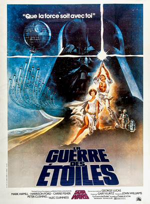
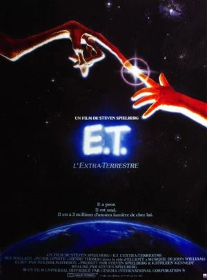
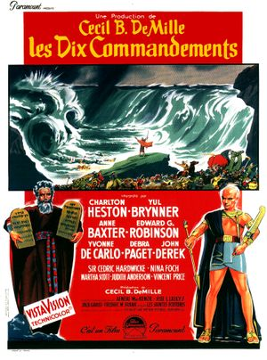
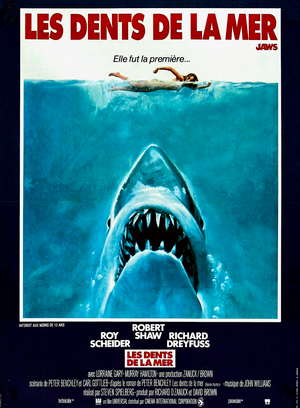
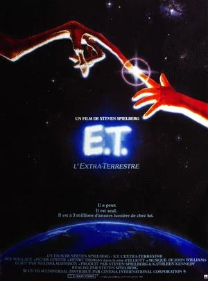
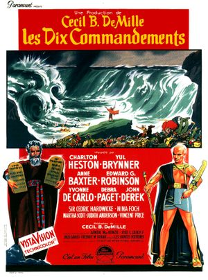
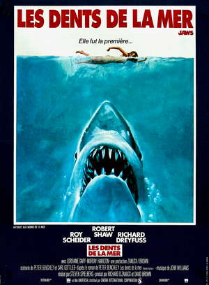
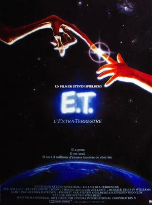
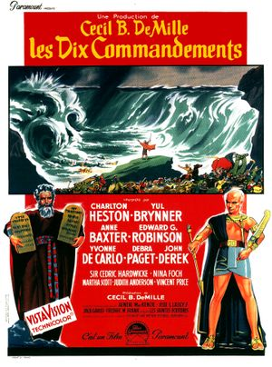
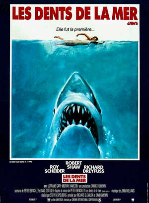

- 1. Autant en emporte le vent (1939) de Victor Fleming
- "Gone with the Wind" 3 h 58 min. Sortie: 1950 (France). Drame, Historique, Romance
- 2. Avatar (2009) de James Cameron
- 2 h 42 min. Sortie: 2009. Action, Aventure, Science-fiction
- 3. Star Wars/La Guerre des étoiles (1977) de George Lucas
- 2 h 01 min. Sortie : 19 octobre 1977 (France). Aventure, Science-fiction, Action
- 4. Titanic (1997) de James Cameron
- 3 h 14 min. Sortie : 7 janvier 1998 (France). Drame, Romance, Catastrophe
- 5. La Mélodie du bonheur (1965) de Robert Wisen
- "The Sound of Music" 2 h 54 min. Sortie : 17 février 1966 (France). Biopic, Drame, Comédie musicale
- 6. E.T. l'extra-terrestre (1982) de Steven Spielberg
- "E.T. the Extra-Terrestrial" 1 h 55 min. Sortie : 1 décembre 1982 (France). Fantastique, Aventure, Science-fiction
- 7. Les Dix Commandements (1956) de Cecil B. DeMille
- "The Ten Commandments" 3 h 40 min. Sortie : 17 janvier 1958 (France). Aventure, Drame, Péplum
- 8. Le Docteur Jivago (1965) de David Lean
- "Doctor Zhivago" 3 h 17 min. Sortie : 7 décembre 1966 (France). Romance, Historique
- 9. Star Wars-Le Réveil de la Force (2015) de J.J. Abrams
- "Star Wars-The Force Awakens" 2 h 16 min. Sortie : 16 décembre 2015. Action, Aventure, Science-fiction
- 10. Les Dents de la mer (1975) de Steven Spielberg
- "Jaws" 2 h 04 min. Sortie : 1 janvier 1976 (France). Épouvante-Horreur, Thriller, Drame

 







